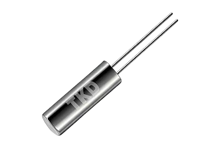

Tuning-fork Crystals (32.768 kHz)
High-precision frequency-control devices based on the quartz piezoelectric effect. The 32.768 kHz fundamental divides exactly to a 1 Hz second signal, with ultra-low power consumption, miniature packages and excellent frequency stability — ideal for wearables, real-time clocks, IoT and automotive electronics.
CylindricalPlastic packageSEAM packageAutomotive grade